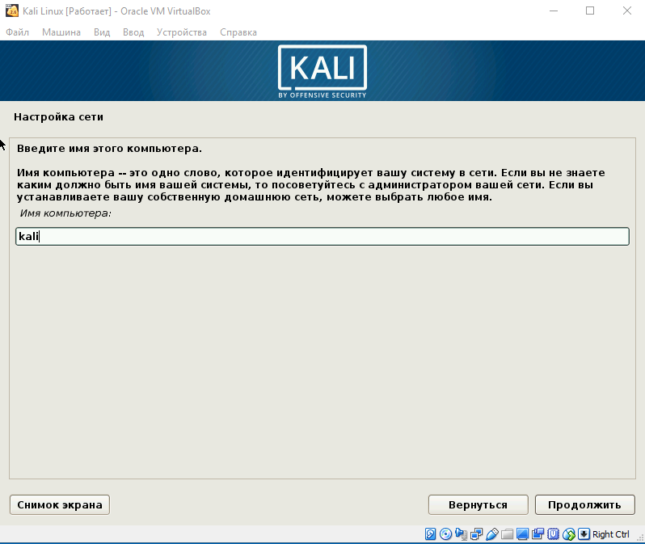
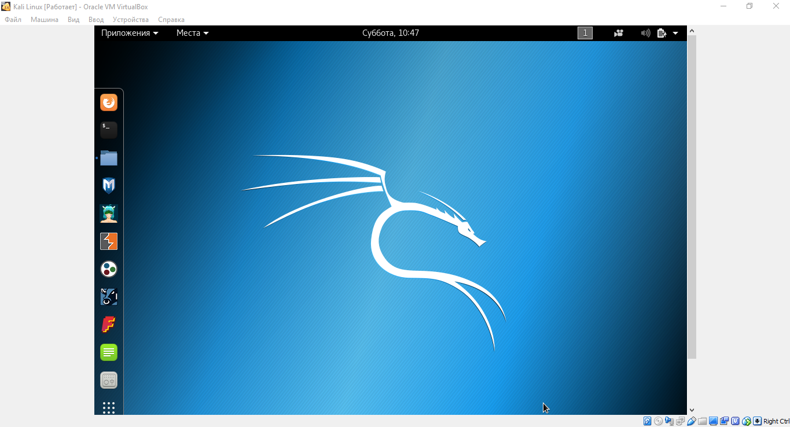

Как установить Kali Linux на VirtualBox
Инструкции Обновлено: 15 февраля, 2018 15 rostislav
Kali Linux – один из немногих дистрибутивов для специалистов информационной безопасности и представляющий собой слияние WHAX и Auditor Security Collection. Главное отличие Kali Linux от других Linux-дистрибутивов – работа в сфере информационной безопасности. Kali Linux включен ряд специальный утилит, созданных для работы в данной области. Система не предназначена для использования в роли основной, так как имеет уклон в определенную рабочую сферу. Для это роли больше подходит Windows или macOS.
Основная задача статьи - подробно разъяснить как установить Kali Linux на VirtualBox, а также объяснить некоторые нюансы, встречающиеся во время установки. Установка Kali Linux на VirtualBox, поделена на три этапа: подготовка, установка системы и установка VirtualBox Guest Additions.
Подготовка к установке Kali Linux
Для начала необходимо скачать образ системы Kali Linux. Сделать это можно на официальном сайте дистрибутива – kali.org. Выбираете нужный вам дистрибутив с соответствующей архитектурой и скачиваете. После того, как вы скачаете образ, необходимо проверить его на целостность посредством сравнение контрольных сумм SHA256.
После этого скачиваем программу VirtualBox с официального сайта (virtualbox.org). На этом подготовка заканчивается, время переходить к установке.
Шаг 1. Создание виртуальной машины
Откройте VirtualBox и нажмите на кнопку «Создать» в контекстном меню.
Шаг 2. Настройка основных параметров машины
Откроется диалоговое окно, где необходимо выполнит три пункта: выбрать имя для образа виртуальной машины, выбрать тип операционной системы, выбрать ее версию.
Примечание: для того, чтобы успешно установить Kali Linux на VirtualBox необходимо выбрать совместимую с дистрибутивом версию «2.6/3.х/4.х», архитектура которой соответствует вашим характеристикам.
Шаг 3. Объем оперативной памяти
Теперь необходимо указать оптимальны объем оперативной памяти, которую будет использовать виртуальная машина в активном режиме.
Примечание: если указать объем, превышающий в два раза количество установленной ОЗУ, может повлиять на производительность.
Шаг 4. Создание виртуального диска
Создаем виртуальный диск, либо же выбираем из уже имеющихся. При создании виртуального диска указываем его тип. Вкратце о каждом из них:
Если вы не знаете какой выбрать, то выбирайте VDI.
Указываем формат хранения. Динамический или фиксированный – решать вам, отталкиваясь от целей. Подробное описание каждого формата приведено в диалоговом окне.
Указывать объем диска, который будет использовать Linux-система, необходимо в зависимости от ваших задач. Оптимальное количество это 100Гб.
Вы создали виртуальную машину. Теперь необходимо поставить на нее систему. Выбираем нужную нам виртуальную машину из списка и запускаем ее.
Установка Kali Linux на VirtualBox
Шаг 1. Выбор загрузочного образа
В открывшемся окне предлагается выбор загрузочного диска. Выбираем скачанный ранее образ системы.
После выбора образа жмем «Продолжить».
Шаг 2. Выбор типа установки системы
Видим, что происходит загрузка системы, после чего открывается меню установки Kali Linux. Здесь необходимо выбрать «Graphics Install». Примечание: при выборе «LiveCD» все данные, сохраненные на системе, удалятся после ее выключения.
Теперь необходимо выбрать язык, который будет сопровождать на вас на протяжении всей установки.
Шаг 4. Базовая информация о системе
Теперь выбираем местоположение, язык клавиатуры, комбинацию клавиш для переключения языка.
Вводим имя компьютера.

Отталкиваясь от необходимости либо настраиваем домен-сети, либо пропускаем данный шаг.
Настраиваем пароль учетной записи. Примечание: следует запомнить, что при вводе пароля в @root консоли, символы отображаться не будут.
Выбираем время, после чего происходит загрузка.
Теперь предстоит выполнить разметку дисков. Так как установка Kali Linux происходит на VirtualBox, то мы используем весь диск.
Разметка диска определяет местонахождение файлов в системе. Так как Linux отличается своей файловой системой от других систем, то на выбор предложено три вариант, содержащие /home /var и /tmp. Теперь подробнее о них:
Данная функция создана для опытных пользователей, если у вас нет необходимости сортировать файлы, то помещайте все на один раздел.
Далее отображается контекстное меню со списком поделенных томов. В данный момент у нас есть основной раздел и ext4 – журналируемая файловая система.
Подтверждаем все изменения и нажимаем «Продолжить».
Теперь предстоит выбрать зеркало для установки дополнительного ПО. Данная функция доступна только в том случае, если при установке у вас есть активное Интернет-соединение. Если оно отсутствует, то вы всегда можете установить дополнительной ПО в самой системе.
Далее идет установка системного загрузчика GRUB. Оставляем "Да" и продолжаем установку.
Шаг 11. Завершение установки
После того, как вы установите GRUB, система попросит изъять установочные носители и перезагрузить ее. Изымать ничего не надо, нажимаем «Продолжить».
Вы завершили установку системы. Она готова к использованию, теперь осталось вписать имя пользователя и пароль, которые вы ввели при установке.

Установка Virtual Box Guest Additions
Шаг 1. Добавление образа на CD носитель
Выбираем из списка нужную виртуальную машину и нажимаем «Настроить». В окне настроек выбираем пункт «Носители» и добавляем в IDE контроллер образ, находящийся в корневой папке программы (C:/ProgramFiles/Oracle/VBoxLinuxAdditions.iso):
Шаг 2. Установка дополнений в Kali Linux
Запускаем виртуальную машину и открываем терминал. Перед установкой необходимо» зайти в терминал из-под рута, для этого прописываем в нем команду:
sudo -i
Далее необходимо загрузить установочный образ с помощью команд, указанных на скриншоте:
cp /media/cdrom0/VBoxLinuxAdditions.run /root
chmod 755 /root/VBoxLinuxAdditions.run
cd /root/
./VBoxLinuxAdditions.run
Теперь вы знаете как установить Kali Linux на VirtualBox. Если вы все-таки решите установить Kali в качестве основной системы для вашего компьютера, то процесс останется тем же за исключением некоторых пунктов.